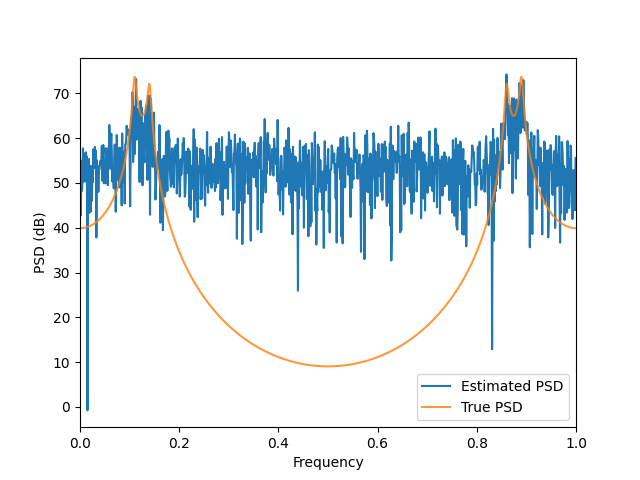
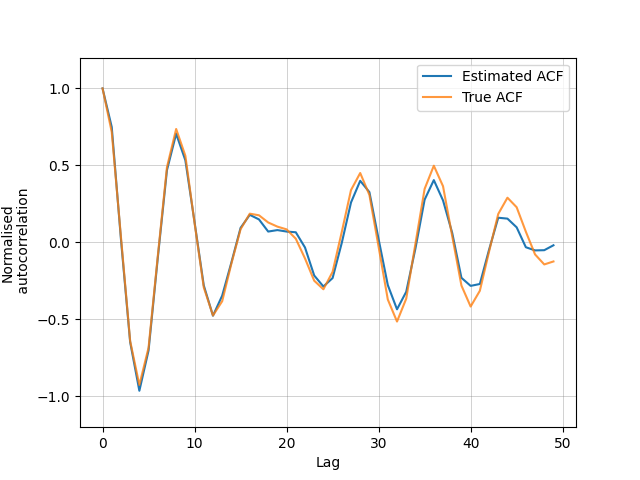

Documentation for SANDZ
Last modified: Oct 18, 2021
This is a library for performing spectral analysis on nonuniformly-sampled data using the nonuniform discrete Fourier transform (NDFT).
Requirements
NumPy and SciPy are required.
One of pynfft or nfft is recommended (alternatively, a custom NFFT implementation can be used).
SymPy is required for
arma.acf_exact().Pyplot is required for
util.plot_sampled_data().
Example usage
import ndft
import arma
import util
import numpy as np
np.random.seed(0)
length = 1000
inds = np.sort(np.random.choice(
np.arange(length), length//2, replace=False))
times = np.arange(length)[inds]
arma_params = (
np.array([2.7607, -3.8106, 2.6535, -0.9238]), np.empty(0), 1)
full_data = arma.arma(*arma_params, length, seed=0)
data = full_data[inds]
(freqs, psd) = util.psd_with_freqs(
data, times=times, ndft_fun=ndft.exe_ndft_fft)
(lags, acf) = util.acf_with_lags(
psd=psd, times=times, ndft_fun=ndft.exe_ndft_fft)
true_psd = arma.psd_exact(*arma_params, freqs)
true_acf = arma.acf_exact(*arma_params[:-1], len(lags)-1)
psd_pwr = util.to_db(psd)
true_psd_pwr = util.to_db(true_psd)
This code estimates the PSD and ACF of a time series generated by the example ARMA model on p.35 of Spectral Analysis of Univariate Time Series (Percival, Walden), with half of entries removed at random. The estimates can be displayed using the following code, which requires pyplot:
import matplotlib.pyplot as plt
ax = plt.subplot()
ax.plot(freqs, psd_pwr, label="Estimated PSD")
ax.plot(freqs, true_psd_pwr, label="True PSD", alpha=.8)
ax.set_xlabel("Frequency")
ax.set_ylabel("PSD (dB)")
ax.legend()
ax.set(xlim=[0,1])
plt.figure()
ax = plt.subplot()
ax.plot(lags, np.real(acf), label="Estimated ACF")
ax.plot(lags, true_acf, label="True ACF", alpha=.8)
ax.set_xlabel("Lag")
ax.set_ylabel("Normalised\n autocorrelation")
ax.legend()
ax.set(ylim=[-1.2,1.2])
ax.grid(color='gray', alpha=0.5, lw=0.5)
plt.show()
This gives the plots:
 {kind=link}
{kind=link}
Further Examples
Here are some further examples. The first two again require pyplot to display the outputs. All of these examples can also be found in examples.py.
import ndft
import arma
import util
import numpy as np
import matplotlib.pyplot as plt
np.random.seed(0)
iterations = 100
gen_len = 1000
arma_params = (np.array([2.7607, -3.8106, 2.6535, -0.9238]), np.array([.9j, 1.1j]), 1)
dropout_pattern = [True, True, False, True, False, True, True, True, True, True]
dropout_pattern *= gen_len//len(dropout_pattern)
full_times = np.arange(gen_len)
times_vec = [
full_times, full_times[dropout_pattern], full_times[dropout_pattern]]
labels = ["No missing data", "Periodic gaps", "Periodic gaps (deconvolved)"]
psd = [None]*len(times_vec)
for i, times in enumerate(times_vec):
psd[i] = [None]*iterations
for j in range(iterations):
data = arma.arma(
*arma_params, gen_len,
seed=np.random.randint(2**16))[times_vec[i]]
if i == 2:
psd[i][j] = ndft.calc_deconvolved_psd(data, times=times_vec[i])
else:
psd[i][j] = ndft.calc_psd(data, times=times_vec[i])
ax = plt.subplot()
for i in range(len(times_vec)):
util.plot_sampled_data(
util.unif_pts(
len(psd[i][0])), np.array(psd[i]), ax,
label=labels[i], db=True, symmetric=False)
freqs = util.unif_pts(gen_len)
ax.plot(
freqs, util.to_db(arma.psd_exact(*arma_params, freqs)),
label="True value", color='black')
ax.set(xlim=[0,1], ylim=[0,100])
ax.legend(loc='lower right')
ax.set_xlabel("Frequency")
ax.set_ylabel("PSD (dB)")
plt.show()
{kind=link}
This example shows how spectral estimation of data with periodic gaps can be improved using deconvolution. Note also the lack of aliasing (symmetry) until twice the Nyquist frequency, which is \(0.5\) – this only occurs when the signal is complex.
import ndft
import util
import numpy as np
import matplotlib.pyplot as plt
np.random.seed(0)
length = 33333
mask = [True, True, False]
times = np.arange(length)[mask * (length//len(mask))]
data = np.exp(2j*np.pi*.3*times) +\
np.exp(2j*np.pi*.4*times) +\
np.exp(2j*np.pi*.8*times) +\
np.random.normal((len(times)))*0.01
acfs = [None]*4
labels = [
"Approximate NuFFT", "Embedded in FFT",
"Periodic NFFT", "Direct estimation"]
util.benchmark()
acfs[0] = np.real(ndft.calc_acf(
data=data, times=times, ndft_fun=ndft.exe_nfft_py))
util.benchmark(labels[0])
acfs[1] = np.real(ndft.calc_acf(
data=data, times=times, ndft_fun=ndft.exe_ndft_fft))
util.benchmark(labels[1])
acfs[2] = np.real(ndft.calc_acf(
data=data, mask=mask, ndft_fun=ndft.exe_nfft_per))
util.benchmark(labels[2])
acfs[3] = [np.real(v) for v in util.direct_acf(
data, times, ndft.MAX_LAG-1).values()]
util.benchmark(labels[3])
for i, acf in enumerate(acfs):
plt.plot(np.arange(ndft.MAX_LAG), acf, label=labels[i])
plt.legend(loc='lower right')
plt.show()
This example demonstrates the difference in speed and output of the various NDFT implementations. On my machine, the output to the terminal was:
Approximate NuFFT: 0.34364060000007157
Embedded in FFT: 0.012971800000741496
Periodic NFFT: 0.28861529999994673
Direct estimation: 8.16284959999939
import ndft
import util
import numpy as np
times = np.array([0, 0.1, 0.2, 0.3])
data = np.array([1,-1,-1,1])
freqs, psd = util.psd_with_freqs(
data, times=times, ndft_fun=ndft.exe_ndft_fft,
max_freq=10)
lags, acf = util.acf_with_lags(
psd=psd, times=times, ndft_fun=ndft.exe_ndft_fft,
max_freq=10, max_lag=.4)
print(freqs)
print(psd)
print(lags)
print(acf)
This example shows how the utility methods automatically determine the correct output units, as long as max_freq is set correctly (it should be equal to the base samping rate, or twice the Nyquist frequency). The outputs should be:
[0. 2.5 5. 7.5]
[0. 2. 0. 2.]
[0. 0.1 0.2 0.3]
[ 1.+0.j 0.+0.j -1.+0.j 0.+0.j]
Common Issues
Ensure that arrays passed into library functions are NumPy arrays and not pure-Python arrays – if an unsupported operation is performed on a pure-Python array, a mysterious and hard-to-debug exception is thrown.
Overview of Mathematical Concepts
This library contains methods to estimate the power spectral density (PSD) and autocorrelation function (ACF) of nonuniformly-sampled data using the nonuniform discrete Fourier transform (NDFT), which is a generalisation of the discrete Fourier transform (DFT). For detail such as conventions used, see the information below.
The DFT
Let \((X_k)\) be a length-\(N\) complex-valued vector. Its discrete Fourier transform is a length-\(N\) vector \((\hat{X}_k)\) given by
The DFT estimates the Fourier transform of a periodic continuous signal sampled at discrete uniform times. Indeed, if the signal \(X(t)\) is periodic with period \(N\) sampled at integral times so that \(X_k=X(k)\), then its DFT estimates the Fourier transform \(\hat{X}(t)\) of \(X\) at \(N\) equispaced frequencies in the range \([0,1)\):
Note that frequencies outside the range \([0,1)\) are aliased to frequencies within this range by Nyquist’s theorem.
In general, a DFT can be evaulated directly in \(\mathcal{O}(n^2)\) time. A DFT of length \(2^k\) can be calculated in \(\mathcal{O}(N\log N)\) time using the fast Fourier transform (FFT) algorithm, and can be evaluated almost as quickly if \(N\) has no large prime factors. If the value of \(N\) is computationally inconvenient, the vector \((X_k)\) can be padded with zeroes to any desired length; this will change the output (as the value of \(N\) will change), as well as the interpretation (the frequencies will now be different), but no information about the signal will be lost.
The NDFT
If the signal \(X(t)\) is instead sampled at nonuniformly-spaced discrete times \(t_1,\dots,t_N\), then its Fourier transform at arbitrary frequencies \(f_1,\dots,f_M\) can be estimated by a more general method. Indeed, given a length-\(N\) complex-valued vector \((X_k)\), its nonuniform discrete Fourier transform is a length-\(M\) vector \((\hat{X}_k)\) given by
Note that the NDFT reduces the the DFT in the case \(t_k=k\) and \(f_k=k/N\). Nyquist’s theorem does not constrain the choice of frequencies so much in this case, since the Nyquist frequency is \(1/2d\) where \(d>0\) is the “highest common factor” of the \(t_k\), that is, the largest value that each \(t_k\) is an integer multiple of.
The NDFT can be evaluated directly in \(\mathcal{O}(mn)\) time (ndft.exe_ndft()), and there are approximate algorithms (called NuFFTs) which use interpolation and the FFT to calculate an approximation in \(\mathcal{O}(m\log m)\) time (ndft.exe_nfft_py()). In this case, the frequencies \(f_k\) must be uniformly spaced, and generally \(m\) should be much larger than \(n\). Alternatively, if the times \(t_k\) are all integer multiples of some factor \(d\), then the NDFT can be embedded in a large DFT with times \(\tilde{t}_k=kd\) and missing values of \(X(\tilde{t}_k)\) set to zero (ndft.exe_ndft_fft()). This is often the case in practice, since the finite time-resolution of measuring devices serves as a suitable common factor.
Suppose now that the times \(t_k\) have been embedded in a regular sequence \(\tilde{t}_k=kd\), as above. The associated DFT will have a size of approximately \((t_N-t_1)/d\), so if \(d\) is relatively large then evaluation is very fast due to the FFT. Since the sampling is nonuniform, some values of \(X(\tilde{t}_k)\) will be missing; if the pattern of missing values is periodic, a further increase in efficiency can be made by exploiting the way in which the DFT factors. More precisely, let \(N=q\times L\), with \(q\) sample times per period \(p\). Then the sample times can be written \(t_{aq+b}=(ap+T_b)d\), where \(0\leq b<q\). Setting the frequencies to \(f_k=k/(Nd)\), the NDFT of \((X_k)\) can be written
For \(q\ll m\), the above sum can be evaluated in \(\mathcal{O}(qm\log m)\) time (ndft.exe_nfft_per()). For comparison, computing the full associated DFT takes \(\mathcal{O}(pm\log m)\) time (when \(p\ll m\)), so this approach is especially advantageous for sparse nonuniform periodic sampling (with \(q\ll p\)).
Power Spectral Density
The power spectral density (PSD) \(S_{XX}\) of a wide-sense stationary signal \(X\) measures how the signal’s power is distributed over frequency (wide-sense stationarity means that the mean and variance of the signal remain constant). For a signal \(X(t)\) sampled at \(N\) integral times, the PSD at frequency \(k/N\) is estimated by
If \(X\) is instead sampled nonuniformly at times \(t_i\), the above expression can be generalised to use the NDFT instead (ndft.calc_psd()). Other generalisations (such as the Lomb-Scargle periodogram) exist, but these generally take real data only.
The spectral window function \(S_{1,1}\) measures how regularly the signal is sampled modulo each frequency (ndft.spec_win()); here, \(1\) is the constant function sampled at the same times \(t_i\) as the signal. Periodicity in the sampling can cause aliasing and phantom peaks in the PSD estimates, and this effect can be reduced by deconvolution with \(S_{1,1}\) (ndft.calc_deconvolved_psd()). However, this operation is ill-conditioned, and accurate estimates can only be obtained if the ACF estimation (see next section) is accurate at all lags used.
Autocorrelation
The autocorrelation function (ACF) \(R_{XX}(\tau)\) of a signal \(X\) is defined to be the cross-correlation of \(X\) with a lagged copy of itself. In the case of nonuniform sampling at times \(t_i\), some summands will be missing due to missing data:
By the Weiner-Khinchin theorem, the ACF is also the Fourier transform of the PSD, and so it can be estimated by applying the FFT to a PSD estimate. The ACF can be normalised by the variance of the signal; assuming wide-sense stationarity, the variance of a signal at lag \(\tau\) is proportional to the number of gaps of length \(\tau\) in the sampling pattern of the signal, and so the normalised ACF \(\overline{R}_{XX}(\tau)\) can be estimated by
Here, \(R_{1,1}\) is the FFT of the spectral window function \(S_{1,1}\) (ndft.lag_strength()), and \(R_{XX}(0)\) normalises \(\overline{R}_{XX}(0)\) to a value of \(1\).
The direct cross-correlation calculation is implemented in util.direct_acf(), whilst the spectral (PSD) method, which is in theory faster due to the FFT, is implemented in ndft.calc_ac(). Note that, by default, the mean of the signal is not removed.
ARMA Process
ARMA processes are a family of WSS random processes with known PSD and ACF; this makes them useful for examples and testing. An ARMA process \((X_n)\) with parameters \((\phi_j)\), \((\theta_k)\) and \(\sigma^2\) can be generated recursively by
where \((W_n)\) is white Gaussian noise with variance \(\sigma^2\). In the implementation in arma.arma(), the process \((W_n)\) is in fact complex white Gaussian noise.
This process is only stationary if the (complex) roots of the polynomial \(1-\sum_j\phi_j x^j\) all lie outside the unit circle.
The PSD of \((X_n)\) (arma.psd_exact()) is given by
where \(\hat{\phi}\) and \(\hat{\theta}\) are the NDFTs of the vectors of parameters \(\phi\) and \(\theta\).
If \(\phi\) and \(\theta\) are real-valued, the normalised ACF of \((X_n)\) (arma.acf_exact()) at integer lags is real, and is given by the solution to the difference equation
with initial conditions
where the \(\psi_k\) are the Taylor coefficients of the rational function
References
Bogacka, B. 2008. MTH6139 Time Series Lecture Notes. Queen Mary University of London. http://www.maths.qmul.ac.uk/~bb/TimeSeries/MAS328.html (accessed 2021-09-22).
Keiner, J., Kunis, S., and Potts, D. 2009. Using NFFT 3 — a software library for various non-equispaced fast Fourier transforms. ACM Trans. Math. Softw. 36, 4, Article 19 (August 2009), 30 pages. DOI: 10.1145/1555386.1555388. http://doi.acm.org/10.1145/1555386.1555388.
Percival, D., and Walden, A. 2020. Spectral Analysis for Univariate Time Series (Cambridge Series in Statistical and Probabilistic Mathematics). Cambridge: Cambridge University Press. DOI:10.1017/9781139235723
Van Loan, C. 1992. Computational Frameworks for the Fast Fourier Transform (Frontiers in Applied Mathematics). Philadelphia, PA, USA: Society for Industrial and Applied Mathematics.
Vityazev, V. V. 1996. Time series analysis of unequally spaced data: Intercomparison between the Schuster periodogram and the LS-spectra. Astronomical and Astrophysical Transactions, 11:2, 139-158. DOI: 10.1080/10556799608205461. https://www.tandfonline.com/doi/abs/10.1080/10556799608205461.
Methods
- ndft.DEFAULT_NDFT(data, max_freq, times, os=10, **kwargs)
Calculates a fast approximation to the NDFT using the NFFT Python package. See
exe_ndft().
- ndft.calc_acf(data=None, psd=None, lag_strengths=None, max_freq=1, max_lag=50, norm_lag_str=True, norm_var=True, **kwargs)
Estimates the normalised autocorrelation of a signal \(F(t)\) using the NDFT.
The autocorrelation is calculated for lags \(\tau_k=k\cdot f_{\text{max}}\) in the range \(0\leq\tau_k<M\). Any additional keyword arguments (such as times) are passed to the NDFT estimator
calc_psd().- Parameters
data (NumPy complex array) – The values \(F(t_i)\) of the signal.
psd (NumPy real array) – Optional pre-calculates PSDs (see
calc_psd()). If provided,datais ignored. Note that, if this option is used andlag_strengthsis not specified, the varargs passed to the originalcalc_psd()call should also be passed to this method, so that the right number of lag strengths can be calculated.lag_strengths (NumPy real array) – Optional pre-calculated lag strengths (see
lag_strength()). Recommended for repeated calls with the same time sampling structure. If not enough lag strengths are provided, they will be assumed to be periodic.max_freq (float) – The period \(f_{\text{max}}\) of the spectrum of \(F\) (i.e. twice the Nyquist frequency). Should normally have value \(1\).
max_lag (int) – The maximum lag \(M\).
norm_lag_str (bool) – If False, does not perform normalisation by lag strength.
norm_var (bool) – If False, does not perform normalisation by variance (value at lag 0).
- Returns
An estimate of the (normalised) autocorrelation of \(F(t)\) for the first M integer lags.
- Return type
NumPy complex array
- ndft.calc_deconvolved_psd(data, **kwargs)
Estimates the PSD of a signal \(F(t)\) by deconvolving its spectral window function from the naive estimate from the NDFT.
Note that this is ill-conditioned.
- Parameters
max_lag (int) – Deconvolution is truncated after this many steps. This should be set to the greatest lag at which
calc_acf()gives a good estimate for the autocovariance.
All other arguments and returns are as in
calc_psd().
- ndft.calc_psd(data, ndft_fun=None, max_freq=1, **kwargs)
Estimates the PSD of a signal \(F(t)\) using the NDFT at equispaced points on \([0,r)\).
- Parameters
data (NumPy complex array) – The values \(F(t_i)\) of the signal.
ndft_fun (function) –
The function that performs the NDFT. Must take parameters
(data, max_freq), and return an estimate for the NDFT of \(F\) at equispaced points on \([0,r)\), in increasing order. Any additional keyword arguments are passed to this function. This library provides several implementations:exe_ndft(): Exact NDFTexe_nfft_py(): Approximation to the NDFT implemented in Pythonexe_nfft_c(): Approximation to the NDFT implemented in Cexe_ndft_fft(): NDFT evaluated by embedding in a larger FFT, possibly rounding the sample times.exe_ndft_nfft_per(): Exact NDFT for periodic nonuniform sampling.
max_freq (float) – The maximum frequency \(r\); must be positive.
- Returns
An estimate of the PSD of \(F(t)\) at equispaced points on \([0,r)\).
- Return type
NumPy real array
- ndft.exe_ndft(data, max_freq, times, os=10)
Calculates the exact NDFT of a signal \(F(t)\) sampled at \(T\) times \(t_i\).
The output spectrum is sampled at \(T\cdot k\) equispaced frequencies on \([0,r)\), where \(k\) is the oversampling factor.
- Parameters
data (NumPy complex array) – The sample values \(F(t_i)\).
max_freq (float) – The maximum frequency \(r\); must be positive.
times (NumPy real array) – The times \(t_i\).
os (int) – The oversampling factor \(k\). Must be a positive integer.
- ndft.exe_ndft_fft(data, max_freq, times)
Calculates an exact NDFT using a large zero-interpolated FFT.
The time domain is rounded to steps of size \(1/f_N\), where \(f_N\) is the value of
max_freq.- Parameters
times (NumPy real array) – The sample times \(t_i\), in increasing order.
- ndft.exe_nfft_c(data, max_freq, times, os=10)
Calculates a fast approximation to the NDFT using the pyNFFT Python wrapper for the NFFT3 C library. See
exe_ndft().Prone to memory errors.
- ndft.exe_nfft_per(data, max_freq, mask)
Calculates an exact NDFT for periodic data.
This is a wrapper for
periodic.nfft_per(). Only frequency range \(1\) is supported as integer times are assumed.
- ndft.exe_nfft_py(data, max_freq, times, os=10, **kwargs)
Calculates a fast approximation to the NDFT using the NFFT Python package. See
exe_ndft().
- ndft.lag_strength(**kwargs)
Calculates the lag strengths of \(t_i\). Arguments and returns are as in
calc_acf(), except that data, psds and norm_lag_str cannot be given.Equivalently, estimates the autocovariance of \(F\equiv1\), sampled at times \(t_i\), using the NDFT, where \(T\) is the number of samples.
- ndft.ndft_mat(fs, ts)
Generates the NDFT matrix mapping data at times \(t_i\) to frequencies \(f_j\).
- Parameters
ts (NumPy float array) – The times \(t_i\).
fs (NumPy float array) – the frequencies \(f_j\) .
- Returns
The NDFT matrix.
- Return type
2D NumPy complex array
- ndft.spec_win(times, **kwargs)
Calculates the spectral window function of \(t_i\). Arguments and returns are as in
calc_psd().Equivalently, estimates the PSD of \(F\equiv1/T\), sampled at times \(t_i\), using the NDFT, where \(T\) is the number of samples.
- arma.acf_exact(phis, thetas, N)
Calculates the (theoretical) autocorrelation of an ARMA(p,q) process at integral lags from \(0\) to \(N\), inclusive
Only works for real-valued parameters \(\phi_i\) and \(\theta_i\).
- Parameters
phis (NumPy float array) – The AR parameters \(\phi_i\) (length \(p\)).
thetas (NumPy float array) – The MA parameters \(\theta_i\) (length \(q\)).
N (int) – Maximum lag \(N\) to calcuate the ACF for.
- Returns
The autocorrelation function.
- Return type
NumPy complex array
- arma.arma(phis, thetas, sigma_sq, N, seed=None)
Generates and returns the first N steps of a (complex) ARMA(p,q) process.
See Spectral Analysis of Univariate Time Series (Percival, Walden) p.35.
- Parameters
phis (NumPy complex array) – The AR parameters \(\phi_i\) (length \(p\))
thetas (NumPy complex array) – The MA parameters \(\theta_i\) (length \(q\)).
sigma_sq (float) – Variance of the underlying Gaussian noise.
N (int) – Number of steps to generate.
seed – Optional seed for the underlying noise.
- Returns
The ARMA time series.
- Return type
NumPy complex array
- arma.psd_exact(phis, thetas, sigma_sq, freqs)
Calculates the (theoretical) PSD of an ARMA(p,q) process at the frequencies \(f_i\).
See Spectral Analysis of Univariate Time Series (Percival, Walden) p.145.
- Parameters
phis (NumPy complex array) – The AR parameters \(\phi_i\) (length \(p\))
thetas (NumPy complex array) – The MA parameters \(\theta_i\) (length \(q\)).
sigma_sq (float) – Variance of the underlying Gaussian noise.
freqs (NumPy float array) – The frequencies \(f_i\) to calculate the PSD at.
- Returns
The PSD.
- Return type
NumPy float array
- util.acf_with_lags(threshold=0.1, **kwargs)
Wrapper for
ndft.calc_acf()that also returns the period axis.- Parameters
threshold (float) – Minimum lag strength needed for an ACF estimate to be returned at that lag. Must be in \([0,1)\).
- Returns
(lags, ACF)
- Return type
(NumPy real array, NumPy complex array)
- util.benchmark(title=None)
Returns the current value of the global timer, then restarts it.
If a title is supplied, displays the current value as well. Note that the global timer
TIMERis started on module load.- Parameters
title (str) – Optional timer title to display.
- Returns
The current value of the timer in seconds, to millisecond precision.
- Return type
float
- util.direct_acf(data, timestamps, maxlag, mincount=10, retcounts=False, removemean=False)
Estimates the (normalised) autocovariance of the time series \(F_j(t)\), sampled at the given times t_i.
The autocovariance at all sufficiently common gaps of length \(0\leq\tau\leq m\) is estimated. Written by Keith Briggs.
- Parameters
data (2D NumPy complex array) – The input data: index
(i,j)is \(F_j(t_i)\)timestamps (Numpy float array) – The times \(t_i\); must be sorted in increasing order. Must be relatively low precision (e.g. integers) for meaningful results.
maxlag (float) – The maximal lag \(m\) to measure the autocovariance at.
mincount (int) – The minimal number of gaps of a certain lag that must exist for the autocovariance at that lag to be estimated.
retcounts (bool) – If True, additionally returns the number of gaps at each lag.
removemean (bool) – If False, does not remove the mean of the data and so calculates autocorrelation instead.
- Returns
Dictionary mapping lags to autocovariances. If a key is missing, then either the lag does not appear often enough to get a reasonable estimate, or the lag is out of range.
- Return type
dict from float to complex
- util.gen_paths(N, max_depth)
Generates all (simple) paths of length \(k\) or less through the complete graph with \(N\) vertices.
Equivalenty, generates all combinations of \(\{0,\dots,N-1\}\) of length less than \(k\) where all adjacent values are distinct. Used to find possible signal paths in a multipath model.
- Parameters
N (int) – The number of vertices in the graph.
max_depth (int) – The maximum path length.
- Returns
A generator for the paths, specified by the vertices visited in order.
- Return type
generator of lists of integers
- util.paths(cur, N, rem_depth)
Recursive helper function for
gen_paths().
- util.plot_sampled_data(x, ys, ax, label='Unknown', db=False, symmetric=False, **kwargs)
Plots the mean of the 2D data
ysagainstxson axesax, with error bars of one standard deviation.Requires pyplot to be installed.
- Parameters
x (NumPy array) – The x-axis (independent) data.
y (2D NumPy array) – The y-axis (dependent) data; the columns are the individual data series.
ax (Pyplot axes object) – The axes to plot on.
label (str) – The data label.
db (bool) – If True, converts the y-axis to logarithmic units.
symmetric (True) – If True, discards the second half of the data. Use if data is symmetric.
Any keyword arguments are passed to the
pyplot.plotandpyplot.fillbetweenmethods. Do not passalpha.
- util.psd_with_freqs(data, **kwargs)
Wrapper for
ndft.calc_psd()that also returns the frequency axis. :returns: (frequencies, PSD) :rtype: (NumPy real array, NumPy complex array)
- util.to_db(data)
Converts data from linear to logarithmic units.
If data is supplied in Watts, output is in dBmW.
- Parameters
data (NumPy nD array) – Data to convert.
- Returns
The converted data.
- Return type
NumPy nD array
- util.unif_pts(N, max=1)
Generates \(N\) uniformly-spaced points on \([0,m)\).
Used to generate frequency axis for PSD.
- Parameters
N (int) – The value of \(N\).
max (float) – The value of \(m\). Must be positive.
- periodic.dft_mat(n, sgn=- 1.0)
Generates an \(n\times n\) DFT matrix.
- Parameters
n (int) – The matrix size \(n\).
sgn (float) – The sign convention to use; must be \(\pm1\).
- periodic.fft(inp, N=None, threshold=3)
Mixed-radix FFT implementation.
Uses the (mixed-radix) Cooley-Tukey algorithm; see Computational frameworks for the FFT (Van Loan) p.81. Calculates a factorisation recursively at runtime.
- Parameters
inp (NumPy complex array) – The input vector.
N (int) – The length of
inp.threshold (int) – The maximum size at which to compute the DFT directly instead of attempting to factorise.
- Returns
The FFT of
inp.- Return type
NumPy complex array
- periodic.ndft_mat(pattern, p, sgn=- 1.0)
Generates an \(p\times q\) NDFT matrix consisting of columns \(k_1,\dots,k_q\) of a \(p\times p\) DFT matrix.
- Parameters
pattern (int array) – The columns \(k_1,\dots,k_q\) to use; must be integers in [0,p).
p (int) – The dimension \(p\).
sgn (float) – The sign convention to use; must be \(\pm1\).
- periodic.nfft_per(data, mask, **kwargs)
Calculates the NDFT of a signal \(F(t)\) sampled at integer times t_i, where the sampling is periodic with integer period \(p\), with structure given by
mask.More precisely, \(t\in(t_i)\) iff
mask[t%b]==True.This is a wrapper for
nfft_per_pattern(), and any keyword arguments are passed to that function. The data is padded so that it contains a whole number of periods.- Parameters
data (NumPy complex array) – The values \(F(t_i)\) of the signal.
mask (bool array) – A length-\(p\) array with value True whenever that time is a sample time in \((t_i)\).
- Returns
The NDFT of the vector \(F(t_i)\).
- Return type
NumPy complex array
- periodic.nfft_per_pattern(inp, pattern, p, dft_fun=<function fft>, **kwargs)
Calculates the NDFT of a signal \(F(t)\) sampled at integer times t_i, where the sampling is periodic with integer period \(p\).
More precisely, let there be \(q\) sample times \(t_1,\dots,t_q\) in \([0,p)\). Then \(t_{aq+b}=ap+t_b\). Note that the signal must be sampled over a whole number of periods, that is, the length of
inpmust be a multiple of \(q\).The algorithm is based off the mixed-radix Cooley-Tukey algorithm; compare
fft().- Parameters
inp (NumPy complex array) – The values \(F(t_i)\) of the signal. pattern (int array): The (integer) sample times \(t_1,\dots,t_q\) in the range \([0,p)\).
p (int) – The period \(p\) of the sampling.
dft_fun (function) – A function that performs a DFT; must take parameters
(data, N), whereNis the length ofdata, and return the DFT ofdata. Any keyword arguments are passed to this function.
- Returns
The NDFT of the vector \(F(t_i)\).
- Return type
NumPy complex array